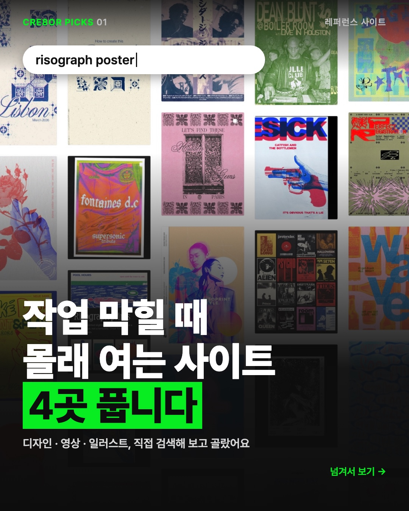
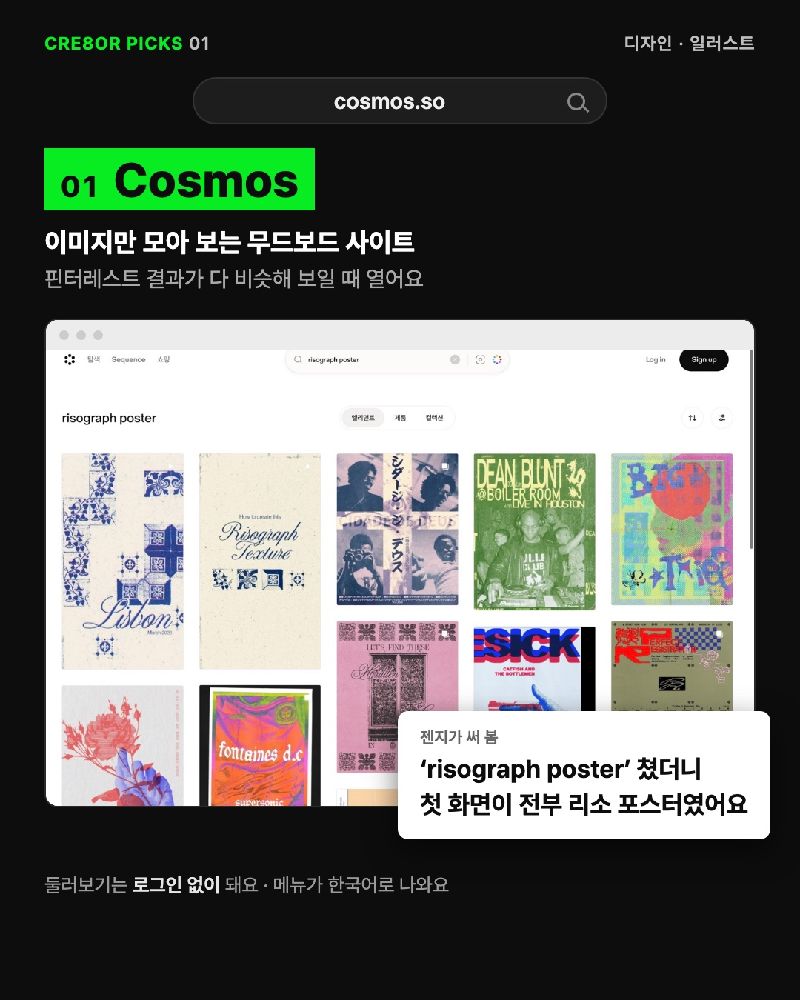
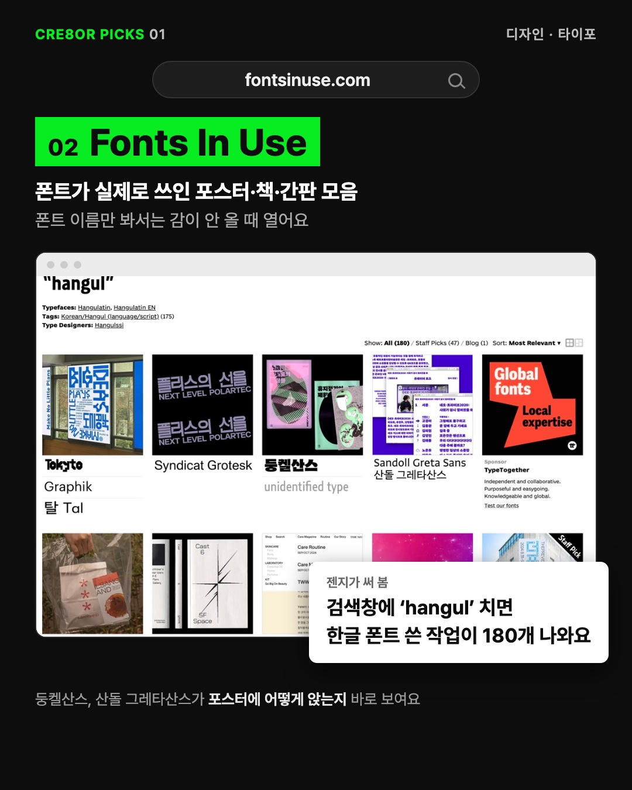
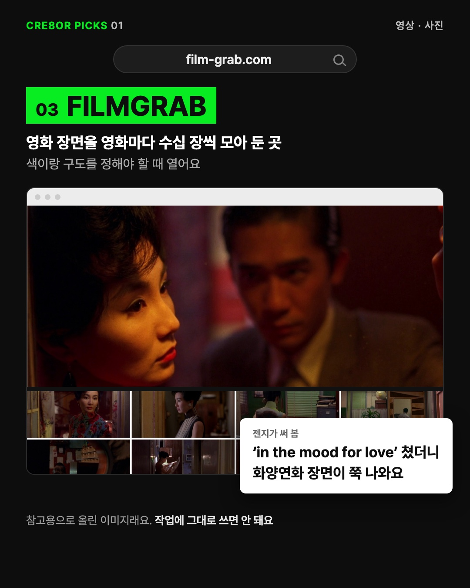
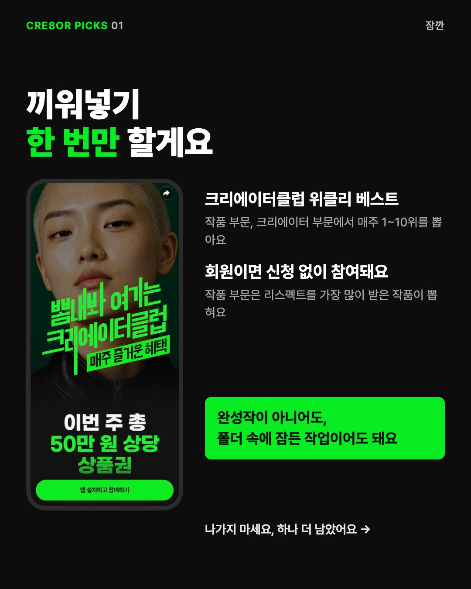
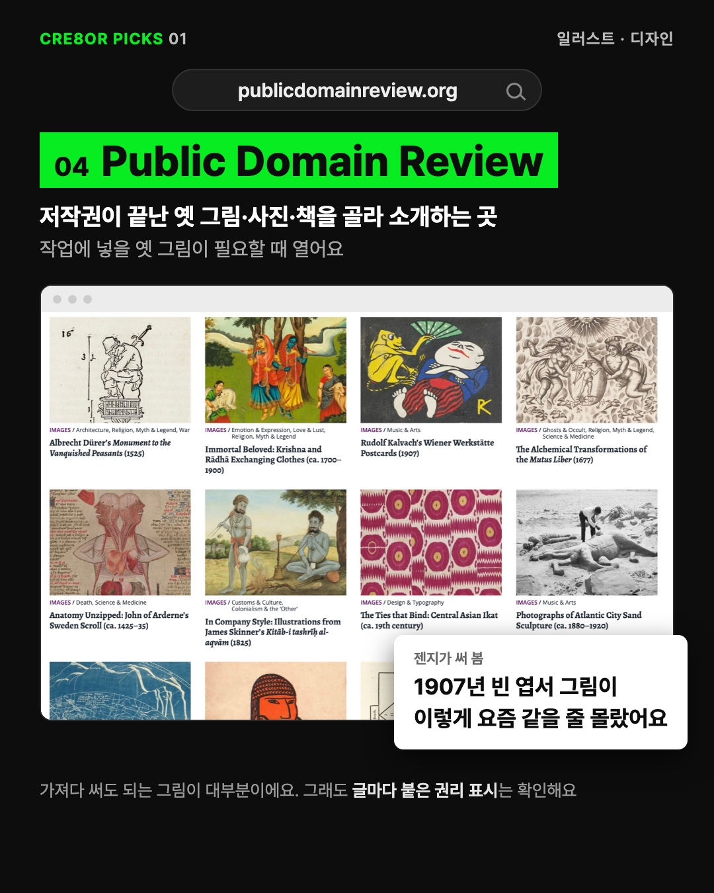
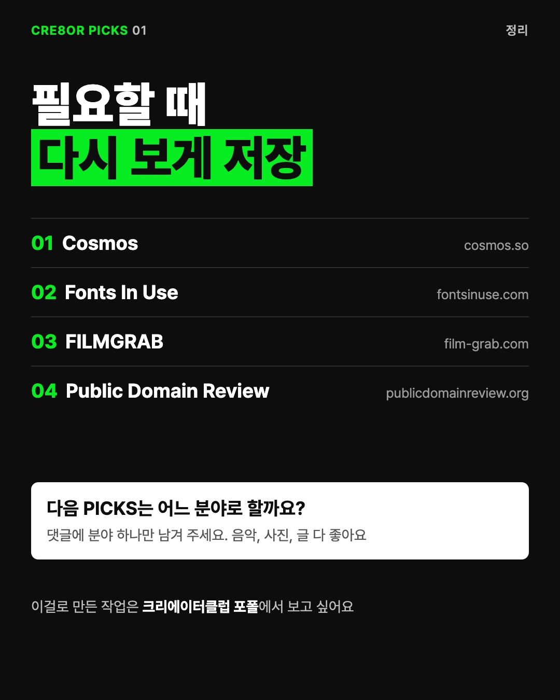

2EZ 「레퍼런스 계정·사이트 모음」의 틀(한 장에 하나 · 검색창 · 실제 화면 · 써 본 한마디 · 중간 끼워넣기 · 끝 저장)을 빌려 창작자용으로 만들었어요. 네 곳 모두 젠지가 10/30에 직접 열어 검색해 봤고, 장 안 화면은 그때 찍은 실제 화면이에요. 아직 시안이고 인스타에는 올리지 않았어요.







사진을 옆으로 밀거나 ‹ › 를 누르면 7장을 넘겨 볼 수 있어요